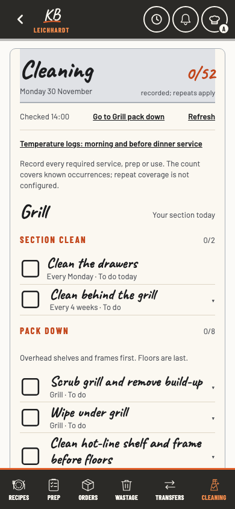
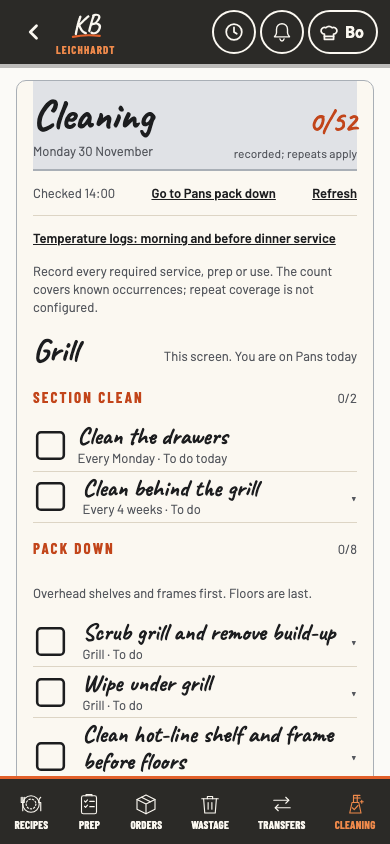
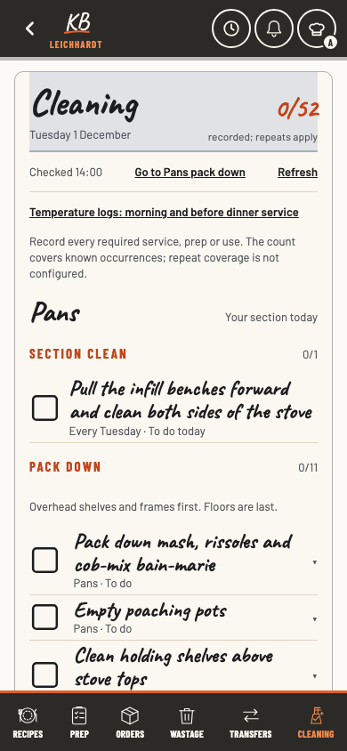
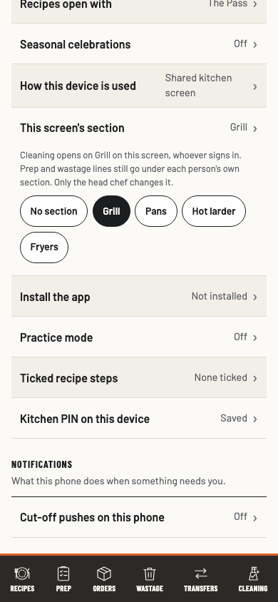
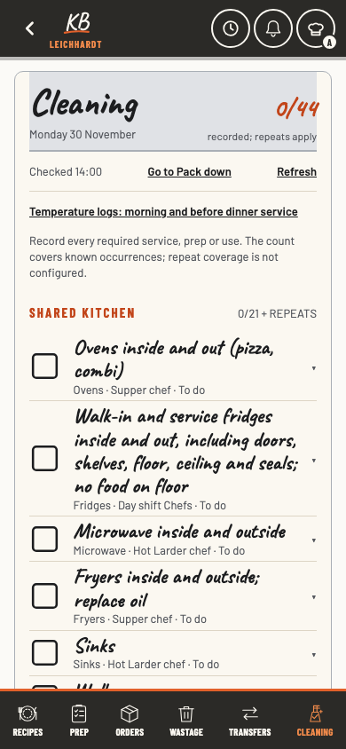
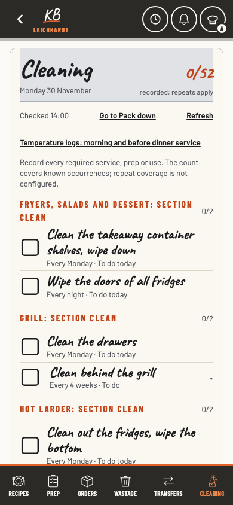
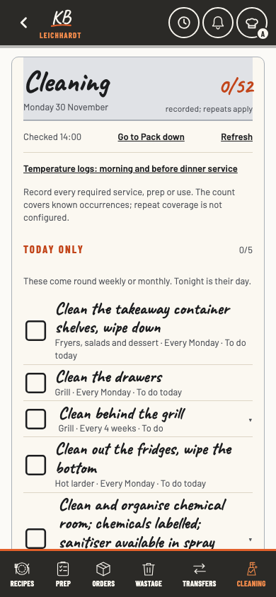
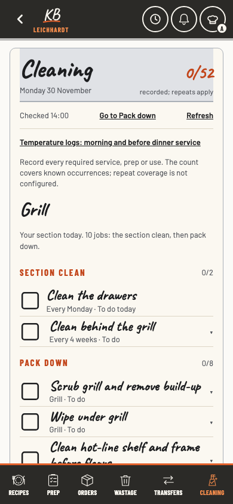
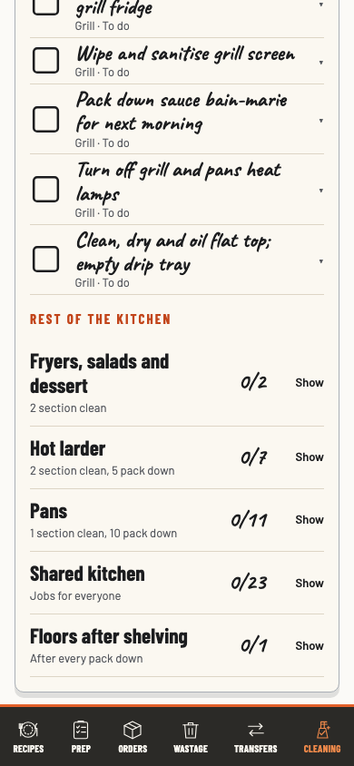

Section cleaning: the designs
How your section jobs could read on the Cleaning page, on a phone. Drawn on the real page with made-up data, with the general list and Pack down both loaded. Nothing in the book has changed.
Recommended: D, built in three steps. Council: A first of the three for 5 of 6, B last for all 6, closed rows rejected by 5 of 6.D. Your section first, nothing hidden (the mix)
The page opens on one section: the one you are on today, or the one this screen is set to. Its weekly and monthly jobs sit beside its Pack down. The rest of the kitchen follows, all open. A job that is not nightly says how often.
Your own phone
A cook on Grill today, from Today's team or their own pick.
- Grill pack down is 0.7 screens down. Today it is 2.9.
- Nothing is behind a tap.

Whole page
A station screen
A shared screen set to Grill, with a cook from Pans signed in.
- The screen's section leads, and the page says so. The link at the top takes the cook to their own Pack down.
- It still needs a PIN, locks after 10 idle minutes, and asks who did each job, as every shared screen does now.

Whole page
Another day
A cook on Pans on a Tuesday.
- Tuesday's job is the first row.
- On a day with no weekly job, the section opens on its Pack down.

Whole page
Setting a screen
One new row in Settings, on a shared screen only.
- Only the head chef changes it.
- Saved on that screen. It changes the order of Cleaning and nothing else.

The three the council scored
Today
The page as it is, without your jobs.
- 46 jobs, 4.9 phone screens long.
- No row says how often it comes round.

Whole page
A. Same page, clearer rows
Each section's own clean gets its own heading. A job that is not nightly says how often.
- Ranked first by 5 of 6: nothing hidden, smallest build.
- A Grill cook's page opens on Fryers, and Grill pack down is 3.8 screens down.

Whole page
B. Today only, on top
The weekly and monthly jobs due today come first, for every section.
- Ranked last by all 6.
- It mixes sections and pulls steps out of Pack down order.

Whole page
C. My section first, rest closed
Your section is open. Everything else is one closed row per section.
- Ranked second by 5 of 6. Own section first was kept for D.
- The closed rows were rejected by 5 of 6: they hide Missed and Not sent jobs. The new starter would close other sections only.

Whole page
C, further down
The rest of the kitchen as closed rows.
- The page drops to 2.2 screens.
- 44 of 54 jobs sit behind a tap.

Measured on the previews
| On a 390 px phone, Grill cook, Monday | Today | A | B | C | D |
|---|---|---|---|---|---|
| Jobs on the page | 46 | 54 | 54 | 54 (10 open) | 54 |
| Whole jobs on the first screen | 5 | 4 | 4 | 4 | 4 |
| Page length, in phone screens | 4.9 | 5.7 | 5.7 | 2.2 | 5.8 |
| Screens down to the Grill cook's weekly job | not in the book | 0.7 | 0.6 | 0.6 | 0.5 |
| Screens down to Grill pack down | 2.9 | 3.8 | 3.6 | 0.7 | 0.7 |
| Taps to tick one of your own new jobs | not in the book | 1 | 1 | 1 | 1 |
| Taps to tick a Shared kitchen job | as today | as today | as today | 1 more, to open it | as today |
| Sideways scroll, buttons under 44 px | none | none | none | none | none |
What I assumed to draw these. Tell me where it is wrong.
- Only jobs whose day you gave are drawn. No day is guessed.
- Lines already in Pack down are left out, so nothing shows twice.
- "Once a month" is drawn as "Every 4 weeks". The start date here is an example.
- Your new jobs are one tap, with no check list.
- A section's new nightly jobs follow its numbered Pack down steps, so the kick oven door is wiped after the oven is turned off.
- "Fryers, salads and dessert" is one cleaning list, as in your list. The book has them as two sections, so either one opens on it.
- On a station screen the screen's section leads, even when the cook signed in is rostered elsewhere.
- The floor reminder under Pack down is cut to one line: "Overhead shelves and frames first. Floors are last." That wording is mine, for you to change.
- The screen's section changes the order of Cleaning only. Prep and wastage lines still go under the person's own section.
- A screen or person on a section with no cleaning list, such as Pass or Prep, sees the page in today's order.
How these were made
The real Cleaning page, running on the test stand-in with made-up data, with its rows moved into each layout by previews/build.cjs. They are previews, not the finished page. The Settings row is a copy of the real device row. Ticking, saving, no-signal states and opening a closed row are not exercised here. Numbers: previews/measurements.json.